4 Modelos mixtos
4.1 Dependencia temporal
set.seed(101)
tiempo <- seq(1, 20, length = 30)
a <- 20
b <- 5
c <- 0.3
peso <- a - (a - b)*exp(-c*tiempo) + rnorm(n = 30, mean = 0, sd = 0.5)
plot(tiempo, peso)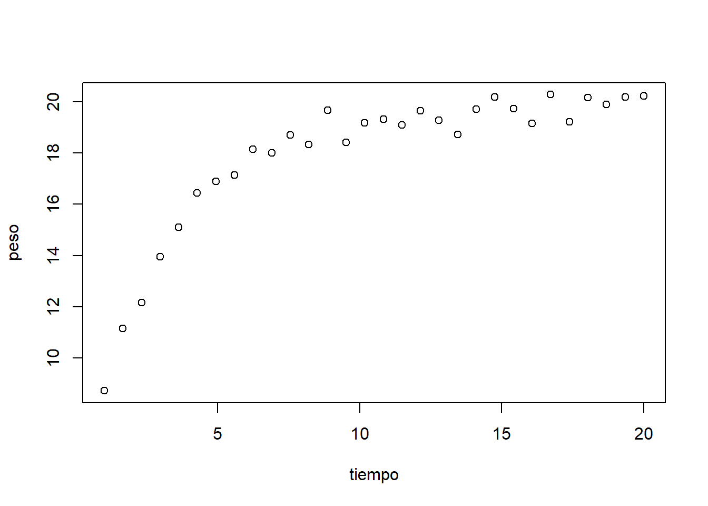
# Gráfico de residuos
m.crec <- lm(log(peso) ~ log(tiempo))
plot(log(tiempo), log(peso))
abline(m.crec, lwd = 2, col = "blue")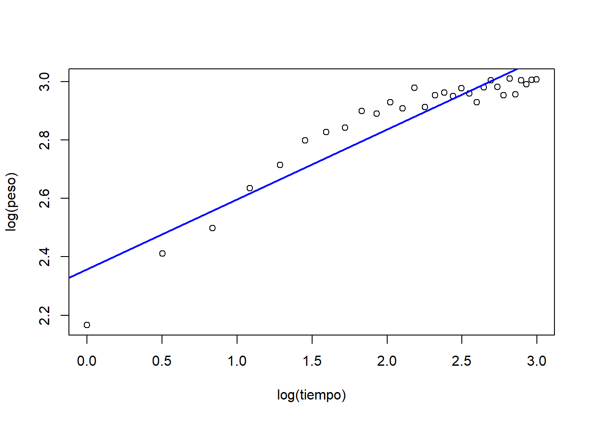
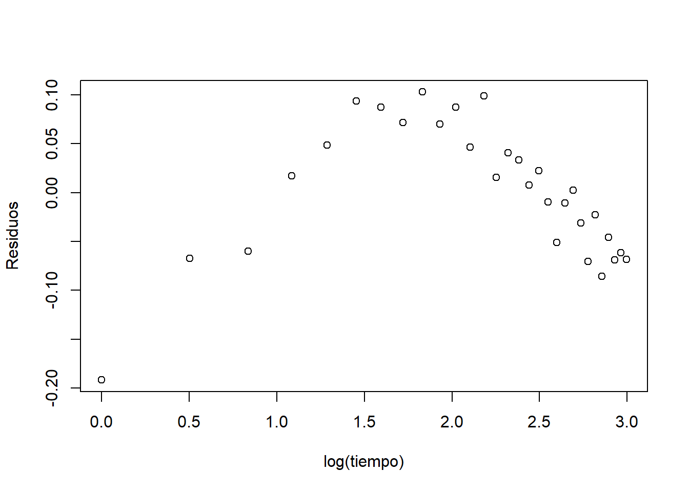
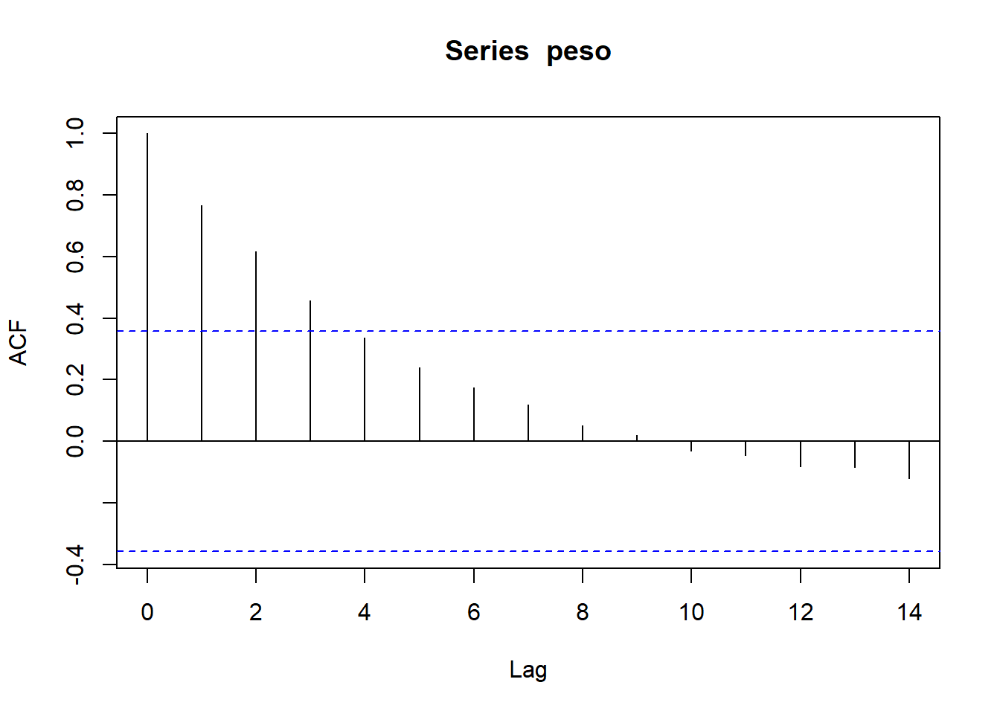
4.2 Dependencia espacial
Ubicación (coordenadas) y concentración de metales pesados en el rio Mosa (Europa).
## Warning: package 'gstat' was built under R version 4.0.5## Warning: package 'ggplot2' was built under R version 4.0.5data(meuse)
coordinates(meuse) = ~x+y
bubble(meuse, "zinc", col = "#00ff0088", main = "zinc concentrations (ppm)")
m.espacial <- lm(zinc ~ x + y, data = meuse)
plot(meuse$x, resid(m.espacial))
abline(a = 0, b = 0, lty = 2)

data(meuse)
meuse$residuos <- resid(m.espacial)
ggplot(meuse, aes(x = x, y = y, col = residuos)) +
geom_point(size = 4) +
scale_color_gradient(low = "yellow", high = "red")
# Semivariograma
coordinates(meuse) = ~x+y
zinc.variog <- variogram(zinc ~ 1, meuse)
plot(zinc.variog)
4.3 Introducción a los modelos mixtos
A partir de 8 plantas, se contaron el número de flores en 3 inflorescencias por planta y se midió la longitud de los pedicelos. Analizar la relación entre la longitud del pedicelo y el número de flores/inflorescencia.
id <- factor(sort(rep(1:8, 3)))
long.pedicelo <- c(1, 1.3, 1.4, 2, 2.2, 2.1, 2.9, 3, 2.8, 3.5, 3.4, 3.7,
4.5, 4.7, 4.7, 5.5, 5.7, 6, 7.2, 7.3, 7.5, 8.4, 8.8, 8.6)
nflores <- c(2, 2, 3, 4, 5, 4, 5, 6, 7, 8, 7, 10, 10, 12, 11, 11, 13, 12,
13, 11, 14, 14, 17, 15)
plantas <- data.frame(id, long.pedicelo, nflores)
plantas## id long.pedicelo nflores
## 1 1 1.0 2
## 2 1 1.3 2
## 3 1 1.4 3
## 4 2 2.0 4
## 5 2 2.2 5
## 6 2 2.1 4
## 7 3 2.9 5
## 8 3 3.0 6
## 9 3 2.8 7
## 10 4 3.5 8
## 11 4 3.4 7
## 12 4 3.7 10
## 13 5 4.5 10
## 14 5 4.7 12
## 15 5 4.7 11
## 16 6 5.5 11
## 17 6 5.7 13
## 18 6 6.0 12
## 19 7 7.2 13
## 20 7 7.3 11
## 21 7 7.5 14
## 22 8 8.4 14
## 23 8 8.8 17
## 24 8 8.6 15plot(plantas$long.pedicelo, plantas$nflores, pch = 19, cex = 2,
xlab = "Longitud del pedicelo", ylab = "Número de flores")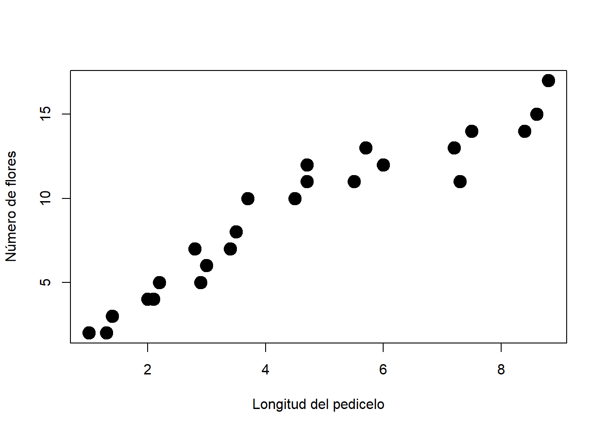
# Opción 1: asumimos que las observaciones son independientes
m1 <- lm(nflores ~ long.pedicelo, data = plantas)
summary(m1)##
## Call:
## lm(formula = nflores ~ long.pedicelo, data = plantas)
##
## Residuals:
## Min 1Q Median 3Q Max
## -2.7697 -0.9116 -0.1089 0.7718 2.6725
##
## Coefficients:
## Estimate Std. Error t value Pr(>|t|)
## (Intercept) 1.2973 0.5926 2.189 0.0395 *
## long.pedicelo 1.7085 0.1159 14.739 6.99e-13 ***
## ---
## Signif. codes: 0 '***' 0.001 '**' 0.01 '*' 0.05 '.' 0.1 ' ' 1
##
## Residual standard error: 1.368 on 22 degrees of freedom
## Multiple R-squared: 0.908, Adjusted R-squared: 0.9039
## F-statistic: 217.2 on 1 and 22 DF, p-value: 6.986e-13# Opción 2: una media por unidad
xlong.pedicelo <- tapply(long.pedicelo, id, mean)
xnflores <- tapply(nflores, id, mean)
plot(xlong.pedicelo, xnflores, pch = 19, cex = 2)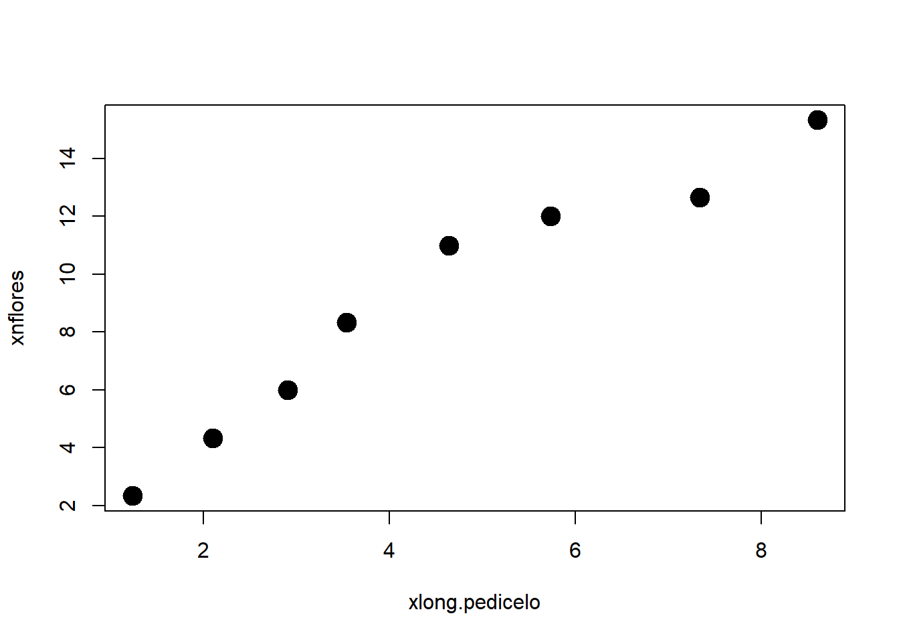
##
## Call:
## lm(formula = xnflores ~ xlong.pedicelo)
##
## Residuals:
## Min 1Q Median 3Q Max
## -1.1378 -0.7432 -0.4178 0.9354 1.7874
##
## Coefficients:
## Estimate Std. Error t value Pr(>|t|)
## (Intercept) 1.3328 0.8834 1.509 0.182
## xlong.pedicelo 1.7007 0.1729 9.837 6.36e-05 ***
## ---
## Signif. codes: 0 '***' 0.001 '**' 0.01 '*' 0.05 '.' 0.1 ' ' 1
##
## Residual standard error: 1.176 on 6 degrees of freedom
## Multiple R-squared: 0.9416, Adjusted R-squared: 0.9319
## F-statistic: 96.78 on 1 and 6 DF, p-value: 6.359e-05# Opción 3: incluir el efecto de la unidad
m3 <- lm(nflores ~ long.pedicelo + id, data = plantas)
summary(m3)##
## Call:
## lm(formula = nflores ~ long.pedicelo + id, data = plantas)
##
## Residuals:
## Min 1Q Median 3Q Max
## -1.5294 -0.4657 -0.1177 0.6667 1.4118
##
## Coefficients:
## Estimate Std. Error t value Pr(>|t|)
## (Intercept) -2.745 1.832 -1.498 0.1548
## long.pedicelo 4.118 1.417 2.907 0.0108 *
## id2 -1.569 1.454 -1.079 0.2977
## id3 -3.196 2.486 -1.286 0.2181
## id4 -3.471 3.350 -1.036 0.3166
## id5 -5.333 4.879 -1.093 0.2916
## id6 -8.863 6.422 -1.380 0.1878
## id7 -14.784 8.677 -1.704 0.1090
## id8 -17.333 10.465 -1.656 0.1184
## ---
## Signif. codes: 0 '***' 0.001 '**' 0.01 '*' 0.05 '.' 0.1 ' ' 1
##
## Residual standard error: 0.9538 on 15 degrees of freedom
## Multiple R-squared: 0.9695, Adjusted R-squared: 0.9533
## F-statistic: 59.68 on 8 and 15 DF, p-value: 5.532e-10## Loading required package: Matrix##
## Attaching package: 'lmerTest'## The following object is masked from 'package:lme4':
##
## lmer## The following object is masked from 'package:stats':
##
## step## Linear mixed model fit by REML. t-tests use Satterthwaite's method [
## lmerModLmerTest]
## Formula: nflores ~ long.pedicelo + (1 | id)
## Data: plantas
##
## REML criterion at convergence: 79.4
##
## Scaled residuals:
## Min 1Q Median 3Q Max
## -1.8940 -0.4662 -0.1966 0.4627 1.6150
##
## Random effects:
## Groups Name Variance Std.Dev.
## id (Intercept) 1.050 1.025
## Residual 1.015 1.007
## Number of obs: 24, groups: id, 8
##
## Fixed effects:
## Estimate Std. Error df t value Pr(>|t|)
## (Intercept) 1.1887 0.8804 6.0833 1.35 0.225
## long.pedicelo 1.7326 0.1720 6.1198 10.07 4.91e-05 ***
## ---
## Signif. codes: 0 '***' 0.001 '**' 0.01 '*' 0.05 '.' 0.1 ' ' 1
##
## Correlation of Fixed Effects:
## (Intr)
## long.pedicl -0.881## $id
## (Intercept)
## 1 -0.7505424
## 2 -0.3735793
## 3 -0.1613717
## 4 0.7734991
## 5 1.3489226
## 6 0.6637327
## 7 -0.9288334
## 8 -0.5718278
##
## with conditional variances for "id"## ANOVA-like table for random-effects: Single term deletions
##
## Model:
## nflores ~ long.pedicelo + (1 | id)
## npar logLik AIC LRT Df Pr(>Chisq)
## <none> 4 -39.679 87.357
## (1 | id) 3 -42.174 90.349 4.9912 1 0.02548 *
## ---
## Signif. codes: 0 '***' 0.001 '**' 0.01 '*' 0.05 '.' 0.1 ' ' 1long.pedicelo.new <- seq(min(plantas$long.pedicelo), max(plantas$long.pedicelo), length = 100)
newdata <- expand.grid(long.pedicelo.new, plantas$id)
colnames(newdata) <- c("long.pedicelo", "id")
newdata$predy.fixed <- predict(m4, newdata = newdata, re.form = NA)
newdata$predy.rand <- predict(m4, newdata = newdata, re.form = NULL)
ggplot(data = plantas, aes(x = long.pedicelo, y = nflores, col = id)) +
geom_point(size = 2) +
geom_line(data = newdata, aes(x = long.pedicelo, y = predy.rand)) +
geom_line(data = newdata, aes(x = long.pedicelo, y = predy.fixed), col = "black", size = 2) + ggtitle("Modelo de intercepto aleatorio") +
xlab("Longitud del pedicelo") + ylab("Numero de flores") +
theme_bw()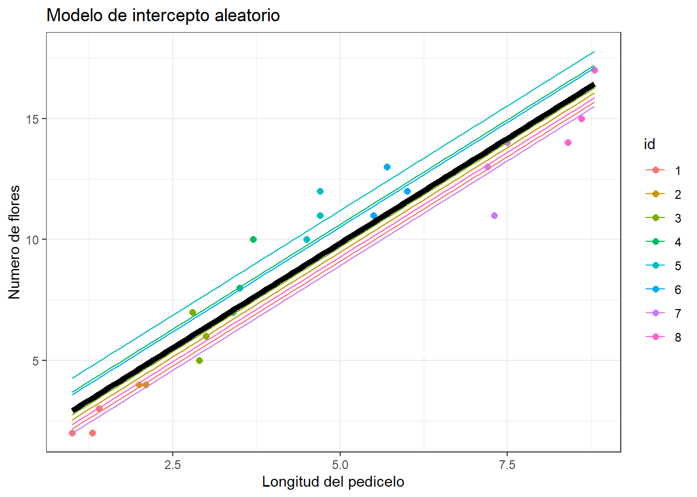
# Opción 5: modelo mixto de intercepto y pendiente aleatorios
m5 <- lmer(nflores ~ long.pedicelo + (long.pedicelo|id), data = plantas)## boundary (singular) fit: see ?isSingular## Linear mixed model fit by REML. t-tests use Satterthwaite's method [
## lmerModLmerTest]
## Formula: nflores ~ long.pedicelo + (long.pedicelo | id)
## Data: plantas
##
## REML criterion at convergence: 77.1
##
## Scaled residuals:
## Min 1Q Median 3Q Max
## -1.8626 -0.5465 -0.1193 0.5507 1.6903
##
## Random effects:
## Groups Name Variance Std.Dev. Corr
## id (Intercept) 0.8215 0.9064
## long.pedicelo 0.1895 0.4353 -1.00
## Residual 0.9006 0.9490
## Number of obs: 24, groups: id, 8
##
## Fixed effects:
## Estimate Std. Error df t value Pr(>|t|)
## (Intercept) 0.03828 0.66573 5.38487 0.057 0.956222
## long.pedicelo 2.08596 0.21792 4.77122 9.572 0.000271 ***
## ---
## Signif. codes: 0 '***' 0.001 '**' 0.01 '*' 0.05 '.' 0.1 ' ' 1
##
## Correlation of Fixed Effects:
## (Intr)
## long.pedicl -0.889
## convergence code: 0
## boundary (singular) fit: see ?isSingular## $id
## (Intercept) long.pedicelo
## 1 -0.20606623 0.098969626
## 2 -0.02342207 0.011249167
## 3 0.10951121 -0.052596116
## 4 -0.82313657 0.395336576
## 5 -0.86260770 0.414293794
## 6 0.00184916 -0.000888116
## 7 0.99686885 -0.478776830
## 8 0.80700335 -0.387588101
##
## with conditional variances for "id"## ANOVA-like table for random-effects: Single term deletions
##
## Model:
## nflores ~ long.pedicelo + (long.pedicelo | id)
## npar logLik AIC LRT Df Pr(>Chisq)
## <none> 6 -38.527 89.054
## long.pedicelo in (long.pedicelo | id) 4 -39.679 87.357 2.303 2 0.3162newdata$predy.fixed <- predict(m5, newdata = newdata, re.form = NA)
newdata$predy.rand <- predict(m5, newdata = newdata, re.form = NULL)
ggplot(data = plantas, aes(x = long.pedicelo, y = nflores, col = id)) +
geom_point(size = 2) +
ggtitle("Modelo de intercepto y pendiente aleatorios") +
geom_line(data = newdata, aes(x = long.pedicelo, y = predy.rand)) +
geom_line(data = newdata, aes(x = long.pedicelo, y = predy.fixed), col = "black", size = 2) +
xlab("Longitud del pedicelo") + ylab("Numero de flores") +
theme_bw()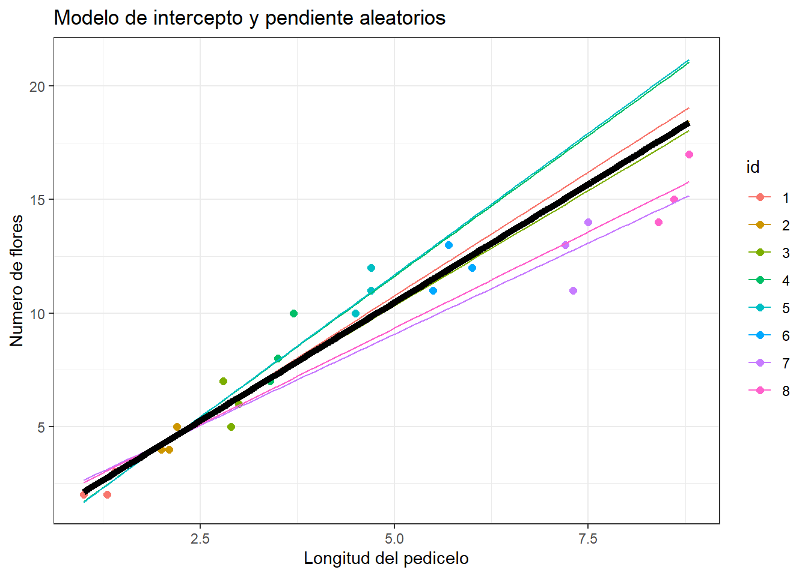
4.4 Un caso especial
##
## Attaching package: 'nlme'## The following object is masked from 'package:lme4':
##
## lmListurl <- "https://raw.githubusercontent.com/hauselin/rtutorialsite/master/data/simpsonsParadox.csv"
df <- fread(url)
head(df)## iq grades class
## 1: 94.5128 67.9295 a
## 2: 95.4359 82.5449 a
## 3: 97.7949 69.0833 a
## 4: 98.1026 83.3141 a
## 5: 96.5641 99.0833 a
## 6: 101.5897 89.8526 a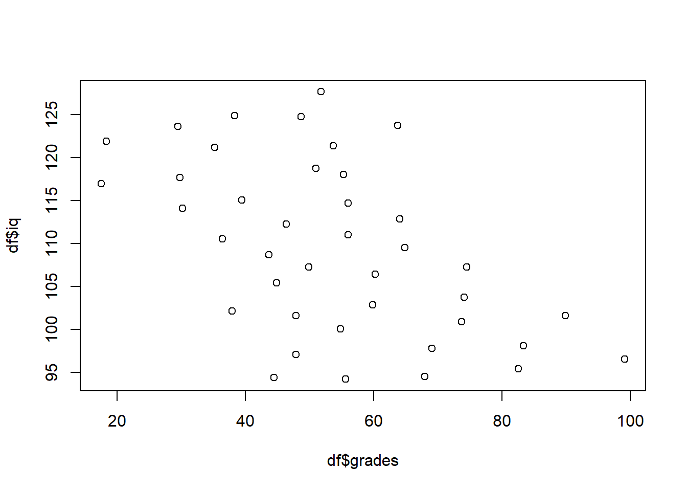
model.class <- lme(iq ~ grades, random = ~1|class, data = df)
predy.fixed <- predict(model.class, level = 0)
ggplot(df, aes(grades, iq, col = class)) + geom_point(size = 2.5) +
ggtitle("Paradoja de Simpson") +
geom_smooth(method = "lm", se = FALSE) +
geom_line(data = data.frame(x = df$grades, y = predy.fixed), aes(x, y), col = "black", size = 3) +
theme_bw()## `geom_smooth()` using formula 'y ~ x'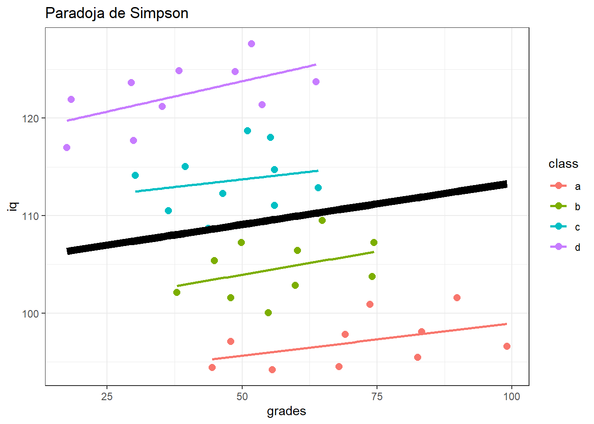
4.5 Modelos lineales generalizados mixtos
Palacio et al. (2014) estudiaron la selección natural mediada por aves frugívoras sobre rasgos de los frutos de Celtis tala (frutos Celtis 2013.txt), incluyendo el diametro (diam), peso (peso), concentración de azúcares (az), peso de pulpa (pulpa), peso de semilla (sem) y relación peso de pulpa/peso de semilla (pulpa.sem). Para esto se midieron 4-10 frutos por árbol en 24 árboles y 4 parches de bosque.
4.5.0.1 Diseño anidado
## Warning: package 'glmmTMB' was built under R version 4.0.3## Learn more about sjPlot with 'browseVignettes("sjPlot")'.## Warning: package 'equatiomatic' was built under R version 4.0.5##
## D1-145 D1-146 D1-147 D1-148 P1-10 P1-11 P1-12 P1-13 P1-2 P1-5(1)
## 26 23 19 16 29 30 30 14 27 27
## P1-5(2) P1-7 P1-8 P1-9 P2-150 P2-151 P2-152 P2-153 P2-154 P2-155
## 30 28 13 30 27 28 30 31 30 30
## P3-1 P3-2 P3-6 P3-7
## 9 30 30 30##
## D1 P1 P2 P3
## D1-145 26 0 0 0
## D1-146 23 0 0 0
## D1-147 19 0 0 0
## D1-148 16 0 0 0
## P1-10 0 29 0 0
## P1-11 0 30 0 0
## P1-12 0 30 0 0
## P1-13 0 14 0 0
## P1-2 0 27 0 0
## P1-5(1) 0 27 0 0
## P1-5(2) 0 30 0 0
## P1-7 0 28 0 0
## P1-8 0 13 0 0
## P1-9 0 30 0 0
## P2-150 0 0 27 0
## P2-151 0 0 28 0
## P2-152 0 0 30 0
## P2-153 0 0 31 0
## P2-154 0 0 30 0
## P2-155 0 0 30 0
## P3-1 0 0 0 9
## P3-2 0 0 0 30
## P3-6 0 0 0 30
## P3-7 0 0 0 30lmm.m0 <- lm(sem ~ diam, data = celtis)
lmm.m1 <- glmmTMB(sem ~ diam + (1|planta), family = gaussian, data = celtis)
lmm.m2 <- glmmTMB(sem ~ diam + (1|parche/planta), family = gaussian, data = celtis)
# Comparación de modelos
AIC(lmm.m0, lmm.m1, lmm.m2)## df AIC
## lmm.m0 3 -3832.245
## lmm.m1 4 -4215.268
## lmm.m2 5 -4214.188## Warning: 'r.squaredGLMM' now calculates a revised statistic. See the help page.## R2m R2c
## [1,] 0.3126432 0.6709598## Family: gaussian ( identity )
## Formula: sem ~ diam + (1 | planta)
## Data: celtis
##
## AIC BIC logLik deviance df.resid
## -4215.3 -4197.6 2111.6 -4223.3 612
##
## Random effects:
##
## Conditional model:
## Groups Name Variance Std.Dev.
## planta (Intercept) 5.899e-05 0.00768
## Residual 5.417e-05 0.00736
## Number of obs: 616, groups: planta, 24
##
## Dispersion estimate for gaussian family (sigma^2): 5.42e-05
##
## Conditional model:
## Estimate Std. Error z value Pr(>|z|)
## (Intercept) -0.0210216 0.0043376 -4.846 1.26e-06 ***
## diam 0.0080182 0.0004735 16.935 < 2e-16 ***
## ---
## Signif. codes: 0 '***' 0.001 '**' 0.01 '*' 0.05 '.' 0.1 ' ' 1# Gráfico
diam.new <- seq(min(celtis$diam, na.rm = TRUE), max(celtis$diam, na.rm = TRUE), length = 5)
newdata <- expand.grid(diam.new, celtis$planta, stringsAsFactors = TRUE)
colnames(newdata) <- c("diam", "planta")
newdata$parche <- substr(newdata$planta, 1, 2)
newdata$predy.fixed <- predict(lmm.m2, newdata = newdata, re.form = NA) # poblacional
newdata$predy.rand1 <- predict(lmm.m2, newdata = newdata, re.form = NULL) # planta
rand2 <- ranef(lmm.m2)$cond$parche
rand2.parche <- rand2[match(newdata$parche, rownames(rand2)), 1]
a <- fixef(lmm.m2)$cond[1]
b <- fixef(lmm.m2)$cond[2]
newdata$predy.rand2 <- a + b*newdata$diam + rand2.parche
# Efecto planta
ggplot(data = celtis, aes(x = diam, y = sem, col = planta)) +
geom_point(size = 2) +
ggtitle("Modelo con factores aleatorios anidados") +
geom_line(data = newdata, aes(x = diam, y = predy.rand1)) +
geom_line(data = newdata, aes(x = diam, y = predy.fixed), col = "black", size = 2) +
xlab("Diametro del fruto (mm)") + ylab("Masa de semilla (g)")## Warning: Removed 1 rows containing missing values (geom_point).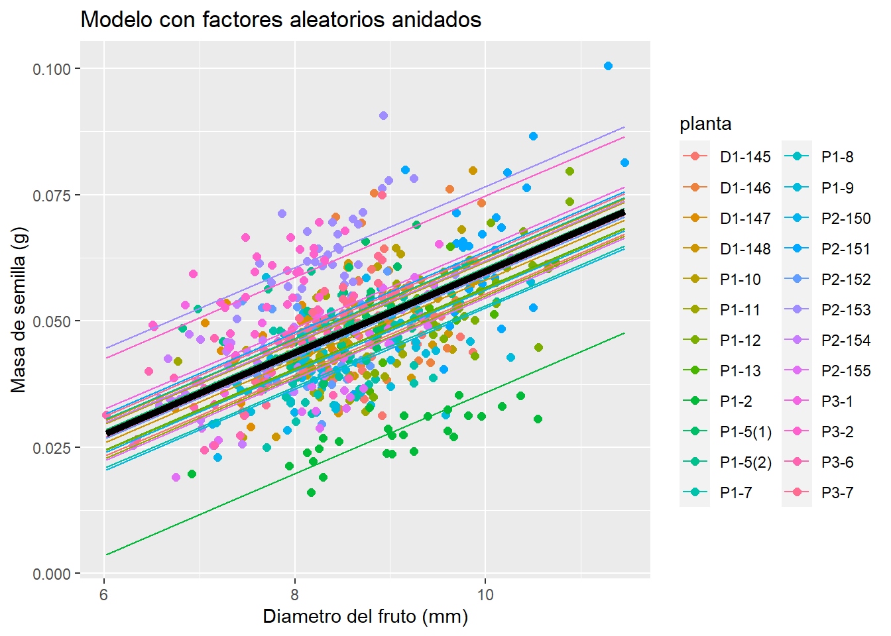
# Efecto parche
ggplot(data = celtis, aes(x = diam, y = sem, col = parche)) +
geom_point(size = 2) +
ggtitle("Modelo con factores aleatorios anidados") +
geom_line(data = newdata, aes(x = diam, y = predy.rand2, col = parche)) +
geom_line(data = newdata, aes(x = diam, y = predy.fixed), col = "black", size = 2) +
xlab("Diametro del fruto (mm)") + ylab("Masa de semilla (g)")## Warning: Removed 1 rows containing missing values (geom_point).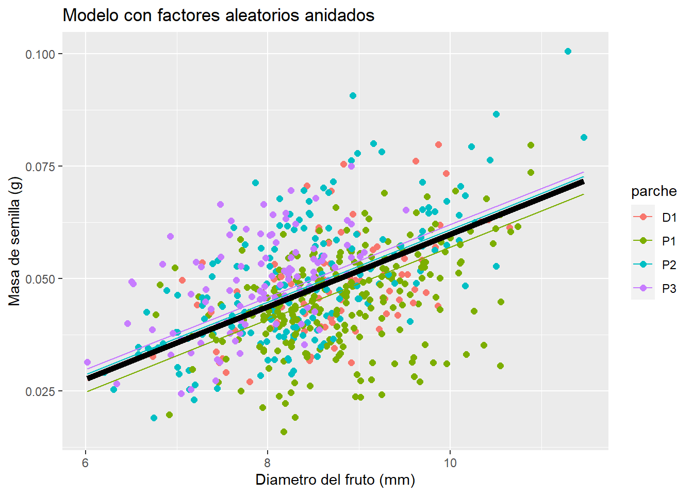
| sem | |||
|---|---|---|---|
| Predictors | Estimates | CI | p |
| (Intercept) | -0.02 | -0.03 – -0.01 | <0.001 |
| diam | 0.01 | 0.01 – 0.01 | <0.001 |
| Random Effects | |||
| σ2 | 0.00 | ||
| τ00 planta:parche | 0.00 | ||
| τ00 parche | 0.00 | ||
| N planta | 24 | ||
| N parche | 4 | ||
| Observations | 616 | ||
| Marginal R2 / Conditional R2 | 0.489 / NA | ||
# Ecuaciones del modelo
lmm.m1 <- lmer(sem ~ diam + (1|planta), data = celtis)
lmm.m2 <- lmer(sem ~ diam + (1|parche/planta), data = celtis)
extract_eq(lmm.m1)## Registered S3 method overwritten by 'broom.mixed':
## method from
## tidy.gamlss broom\[ \begin{aligned} \operatorname{sem}_{i} &\sim N \left(\alpha_{j[i]} + \beta_{1}(\operatorname{diam}), \sigma^2 \right) \\ \alpha_{j} &\sim N \left(\mu_{\alpha_{j}}, \sigma^2_{\alpha_{j}} \right) \text{, for planta j = 1,} \dots \text{,J} \end{aligned} \]
\[ \begin{aligned} \operatorname{sem}_{i} &\sim N \left(\alpha_{j[i],k[i]} + \beta_{1}(\operatorname{diam}), \sigma^2 \right) \\ \alpha_{j} &\sim N \left(\mu_{\alpha_{j}}, \sigma^2_{\alpha_{j}} \right) \text{, for planta:parche j = 1,} \dots \text{,J} \\ \alpha_{k} &\sim N \left(\mu_{\alpha_{k}}, \sigma^2_{\alpha_{k}} \right) \text{, for parche k = 1,} \dots \text{,K} \end{aligned} \]
4.5.0.2 Diseño cruzado
## 'data.frame': 144 obs. of 3 variables:
## $ diameter: num 27 23 26 23 23 21 27 23 26 23 ...
## $ plate : Factor w/ 24 levels "a","b","c","d",..: 1 1 1 1 1 1 2 2 2 2 ...
## $ sample : Factor w/ 6 levels "A","B","C","D",..: 1 2 3 4 5 6 1 2 3 4 ...## diameter plate sample
## Min. :18.00 a : 6 A:24
## 1st Qu.:22.00 b : 6 B:24
## Median :23.00 c : 6 C:24
## Mean :22.97 d : 6 D:24
## 3rd Qu.:24.00 e : 6 E:24
## Max. :27.00 f : 6 F:24
## (Other):108##
## A B C D E F
## a 1 1 1 1 1 1
## b 1 1 1 1 1 1
## c 1 1 1 1 1 1
## d 1 1 1 1 1 1
## e 1 1 1 1 1 1
## f 1 1 1 1 1 1
## g 1 1 1 1 1 1
## h 1 1 1 1 1 1
## i 1 1 1 1 1 1
## j 1 1 1 1 1 1
## k 1 1 1 1 1 1
## l 1 1 1 1 1 1
## m 1 1 1 1 1 1
## n 1 1 1 1 1 1
## o 1 1 1 1 1 1
## p 1 1 1 1 1 1
## q 1 1 1 1 1 1
## r 1 1 1 1 1 1
## s 1 1 1 1 1 1
## t 1 1 1 1 1 1
## u 1 1 1 1 1 1
## v 1 1 1 1 1 1
## w 1 1 1 1 1 1
## x 1 1 1 1 1 1## Linear mixed model fit by REML. t-tests use Satterthwaite's method [
## lmerModLmerTest]
## Formula: diameter ~ 1 + (1 | plate) + (1 | sample)
## Data: Penicillin
##
## REML criterion at convergence: 330.9
##
## Scaled residuals:
## Min 1Q Median 3Q Max
## -2.07923 -0.67140 0.06292 0.58377 2.97959
##
## Random effects:
## Groups Name Variance Std.Dev.
## plate (Intercept) 0.7169 0.8467
## sample (Intercept) 3.7311 1.9316
## Residual 0.3024 0.5499
## Number of obs: 144, groups: plate, 24; sample, 6
##
## Fixed effects:
## Estimate Std. Error df t value Pr(>|t|)
## (Intercept) 22.9722 0.8086 5.4866 28.41 3.62e-07 ***
## ---
## Signif. codes: 0 '***' 0.001 '**' 0.01 '*' 0.05 '.' 0.1 ' ' 1| diameter | |||
|---|---|---|---|
| Predictors | Estimates | CI | p |
| (Intercept) | 22.97 | 21.37 – 24.57 | <0.001 |
| Random Effects | |||
| σ2 | 0.30 | ||
| τ00 plate | 0.72 | ||
| τ00 sample | 3.73 | ||
| ICC | 0.94 | ||
| N plate | 24 | ||
| N sample | 6 | ||
| Observations | 144 | ||
| Marginal R2 / Conditional R2 | 0.000 / 0.936 | ||
## [[1]]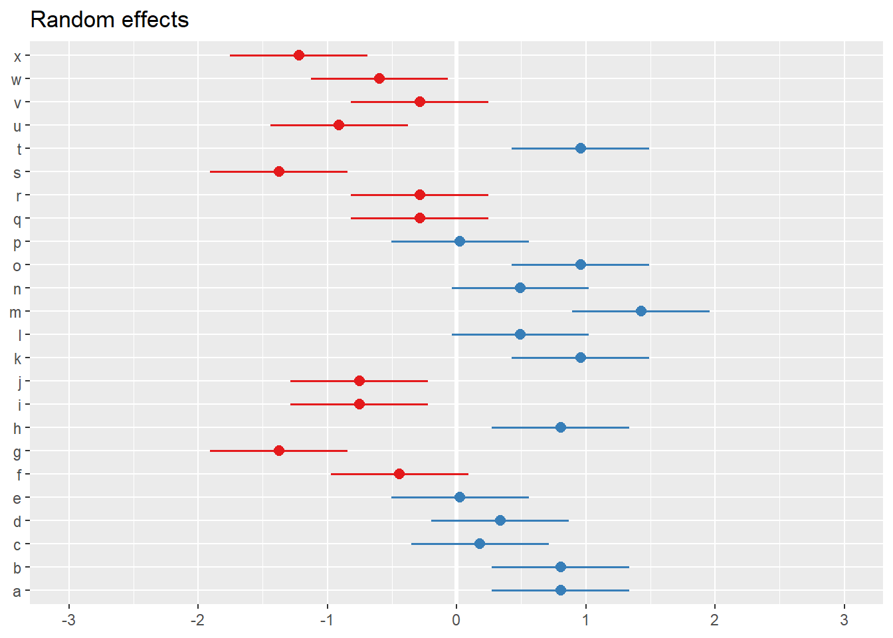
##
## [[2]]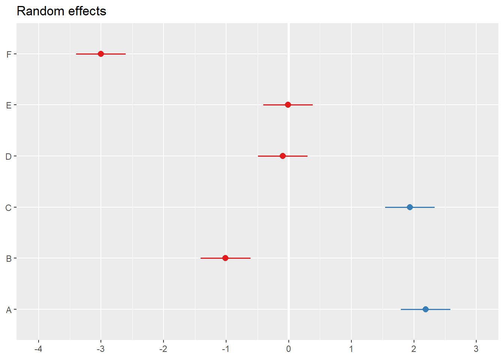
4.7 Actividades
4.7.0.1 Ejercicio 5.1
Palacio et al. (2014) realizaron conteos de 44 especies de aves a lo largo de un año en 10 puntos de muestreos (id) localizados en un bosque de ligustro y arbustales circundantes (habitat.type). El set de datos corresponde a abundancia_aves.txt.
Analice los factores que se relacionan con la abundancia total de individuos y con las siguientes dos especies: Tordo músico (agebad) y Benteveo (pitsul).
Identifique los efectos fijos y aleatorios incluidos en cada modelo.
Según el problema de estudio y el modelo especificado ¿A qué tipo de diseño corresponde?
En base a los resultados obtenidos ¿Tiene sentido incluir efectos aleatorios? Justifique.
¿Puede hipotetizar algo sobre la distribuciones de probabilidad utilizada para cada especie y para la abundancia total?